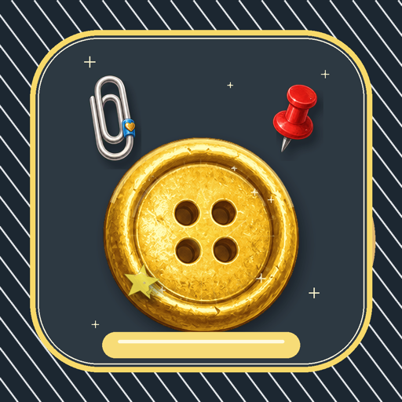

The Boss Ends the Run
Each chapter is one run of about 30 minutes, and it ends when you defeat the boss waiting at the end: the Padlock, the Paper Shredder, the Drafting Compass and more.
Tiny survivor-like roguelite for iPhone
You are a button lost in a drawer. The small things around you fight for you: a paperclip orbiting your body, a thumbtack firing off, a coin ricocheting, a button battery arcing. Drag anywhere on the screen to move, survive 30-minute runs, evolve your gear, and take down the boss. Available on the App Store.
Button Down is developed and supported by HAGOPA Studio, the game studio branch of BUKSAETONG. This is the official page for the iPhone version.

Each chapter is one run of about 30 minutes, and it ends when you defeat the boss waiting at the end: the Padlock, the Paper Shredder, the Drafting Compass and more.
Every weapon has an evolution, and the right pairs unlock synergies. A run holds 6 weapons and 4 supplies, so the question is always what to give up.
Trash enemies join on a schedule, elites arrive on fixed intervals, and bosses scatter hordes, sweep lanes, and ram you off course.
5 chapters (Drawer, Desk Top, Pencil Case, Sewing Box, Backpack), Endless Challenge and Expanded Challenge with Game Center leaderboards, Game Center achievements, and 14 interface languages. Plays offline. No ads.
Twin Pack adds two chapters and three twin buttons tied by a thread. Tool Pack adds the Toolbox chapter, six tool weapons with evolutions, and Pocket Packing.
iPhone 용 서랍 속 작은 생존 로그라이트
당신은 서랍 안에서 길을 잃은 단추입니다. 주변을 도는 종이클립, 날아가는 압정, 튕기는 동전, 번쩍이는 단추전지 — 서랍 속 사소한 물건들이 알아서 싸워 줍니다. 화면 아무 곳이나 드래그해서 움직이고, 30분을 버티며 무기를 진화시켜 보스를 쓰러뜨리세요. App Store 에서 만날 수 있습니다.
챕터 하나가 약 30분짜리 한 판이고, 마지막에 기다리는 보스 — 자물쇠, 문서 분쇄기, 제도 컴퍼스 등 — 를 쓰러뜨려야 끝납니다.
모든 무기에 진화형이 있고, 알맞은 짝을 함께 들면 시너지가 붙습니다. 한 판에 무기 6개, 보조 물품 4개까지 — 무엇을 포기할지의 문제입니다.
챕터 5개, 도전 · 확장 도전(Game Center 순위표), Game Center 업적, 14개 언어, 오프라인 플레이, 광고 없음. 트윈 팩과 툴 팩은 선택 구매입니다.